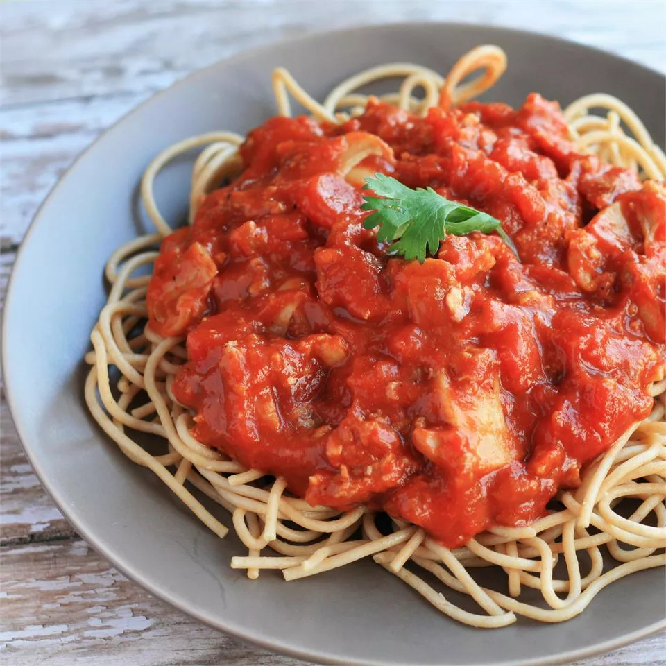

Easy Spaghetti

Description:
Spaghetti is a long, thin, solid, cylindrical pasta. It is a staple food
of traditional Italian cuisine. Like other pasta, spaghetti is made of
milled wheat and water and sometimes enriched with vitamins and minerals.
Italian spaghetti is typically made from durum wheat semolina.
This is an easy spaghetti recipe that anyone can make!
Ingredients:
1 pound lean ground beef
2 1/2 cups chopped tomatoes
1 1/3 (6 oz) cans tomato paste
1 (4.5 oz) can sliced mushrooms
2 tbsp dried minced onion
1 tsp salt
1 tsp dried oregano
3/4 tsp white sugar
1/4 tsp ground black pepper
1/8 tsp garlic powder
12 oz spaghetti
Steps:
-
Heat a large skillet over medium-high heat. Cook and stir ground beef
in the hot skillet until browned and crumbly, 5 to 7 minutes. Drain
and discard grease.
-
Transfer beef into a large pot over low heat; stir in tomatoes, tomato
paste, mushrooms, onion, salt, oregano, sugar, pepper, and garlic
powder. Cover and simmer, stirring occasionally, for 2 hours.
-
Bring a large pot of lightly salted water to a boil. Cook spaghetti in
the boiling water, stirring occasionally, until tender yet firm to the
bite, about 12 minutes; drain. Serve meat sauce over spaghetti.